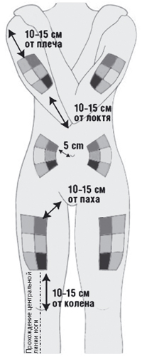
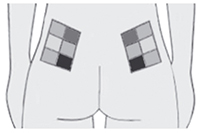
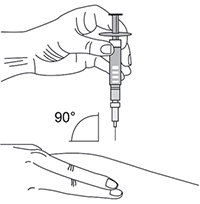
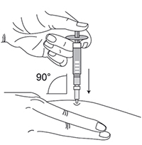

|
 |
| ТЕБЕРИФ® (TEBERIF) interferon beta-1a раствор д/п/к введения | ||||||||||||||||||||||||||||||||||||||||||||||||||||||||||||||||||||
|
Клинико-фармакологическая группа: Интерферон. Препарат, применяемый при рассеянном склерозе Номер и дата регистрации: ЛП-004137 от 13.02.17 Код ATX: L03AB07 |
Владелец регистрационного удостоверения: зарегистрировано и произведено Представительство: | |||||||||||||||||||||||||||||||||||||||||||||||||||||||||||||||||||
Форма выпуска, состав и упаковка Раствор для п/к введения в виде прозрачной и бесцветной жидкости.
Вспомогательные вещества: лизина гидрохлорид - 27.4 мг, полисорбат 20 - 0.05 мг, натрия ацетата тригидрат - 0.272 мг, уксусная кислота ледяная - до pH 4.2, вода д/и - до 1 мл. 0.5 мл - шприцы бесцветного стекла (1) - упаковки контурные ячейковые (3) - коробки картонные. Раствор для п/к введения в виде прозрачной и бесцветной жидкости.
Вспомогательные вещества: лизина гидрохлорид - 27.4 мг, полисорбат 20 - 0.05 мг, натрия ацетата тригидрат - 0.272 мг, уксусная кислота ледяная - до pH 4.2, вода д/и - до 1 мл. 0.5 мл - шприцы бесцветного стекла (1) - упаковки контурные ячейковые (3) - коробки картонные. | ||||||||||||||||||||||||||||||||||||||||||||||||||||||||||||||||||||
| ||||||||||||||||||||||||||||||||||||||||||||||||||||||||||||||||||||
Описание препарата основано на официально утвержденной инструкции по применению и утверждено компанией-производителем для издания 2021 г. | ||||||||||||||||||||||||||||||||||||||||||||||||||||||||||||||||||||
Фармакологическое действие |
Фармакокинетика |
Показания |
Режим дозирования |
Побочное действие |
Противопоказания |
Беременность и лактация |
Особые указания |
Передозировка |
Лекарственное взаимодействие |
Условия хранения и сроки годности |
Условия реализации
Фармакологическое действие
Интерфероны относятся к группе эндогенных гликопротеинов, обладающих иммуномодулирующими, противовирусными и антипролиферативными свойствами. Белковая структура препарата Тебериф® (интерферон бета-1а человеческий рекомбинантный) представляет собой природную аминокислотную последовательность интерферона бета человека, полученную методом генной инженерии с использованием культуры клеток яичника китайского хомячка и, следовательно, является гликозилированным, как и природный, белком. Независимо от способа введения, изменения фармакодинамического эффекта связывают с терапией препаратом Тебериф®. После однократной дозы внутриклеточная и сывороточная активность 2’,5’-олигоаденилат-синтетазы (2’,5’OAS) и сывороточная концентрация бета-2-микроглобулина и неоптерина повышаются в течение 24 ч и затем в течение 2 дней начинают снижаться. При п/к и в/м введении ответ на введение препарата Тебериф® полностью идентичен. После 4 последовательных п/к инъекций, повторяющихся каждые 48 ч, биологический ответ остается повышенным без признаков привыкания. П/к введение интерферона бета-1а здоровым добровольцам и пациентам с рассеянным склерозом повышает уровень маркеров биологического ответа (активность 2',5'-олигоаденилат-синтетазы, концентрация неоптерина и бета-2-микроглобулина в плазме). Время достижения Cmax после однократного п/к введения препарата Тебериф® составляет от 24 до 48 ч для неоптерина, бета-2-микроглобулина и 2’,5'OAS, 12 ч для MXI и 24 ч для олигоаденилат-синтетазы 1 (OAS1) и олигоаденилат-синтетазы 2 (OAS2). Подобные пики концентраций для большинства этих маркеров наблюдаются после первого и шестого введений. Механизм действия препарата Тебериф® в организме больных рассеянным склерозом до конца не изучен. Показано, что препарат способствует ограничению повреждений ЦНС (демиелинизация), лежащих в основе заболевания. Данные клинических исследований Первый эпизод демиелинизации В двухлетнем контролируемом клиническом исследовании интерферон бета-1а в рекомендуемой дозе продемонстрировал эффективность при лечении пациентов с первым эпизодом демиелинизации, предположительно в результате рассеянного склероза. У пациентов, включенных в исследование, отмечалось как минимум 2 асимптомных очага на Т2-взвешенных МРТ изображениях размером не менее 3 мм, причем хотя бы один из очагов был овальной формы, перивентрикулярным или инфратенториальным. Другие заболевания, которые могли лучше объяснить симптоматику пациента, чем диагноз рассеянного склероза, были исключены. Было установлено, что интерферон бета-1а 44 мкг при приеме 3 раза в неделю задерживал прогрессирование заболевания у пациентов с первым эпизодом демиелинизации. Снижение риска прогрессирования заболевания составило 52% по сравнению с плацебо. Данные эффективности интерферона бета-1а при приеме 44 мкг 3 раза в неделю приведены ниже.
Ремиттирующий рассеянный склероз Безопасность и эффективность интерферона бета-1а были оценены у пациентов с ремиттирующим рассеянным склерозом при дозах в диапазоне 11-44 мкг (2-12 млн. ME), вводимых п/к 3 раза в неделю. Было показано, что в дозе 44 мкг интерферон бета-1а снижает частоту (30% в течение 2 лет) и тяжесть обострений у пациентов с двумя и более обострениями в течение последних 2 лет и с оценкой от 0 до 5 по расширенной шкале оценки степени инвалидизации (EDSS) перед началом лечения. Доля пациентов с подтвержденным прогрессированием инвалидизации уменьшилась с 39% (плацебо) до 30% и 27% (интерферон бета-1а 22 мкг и интерферон бета-1а 44 мкг соответственно). Через 4 года среднее снижение числа обострений составляло 22% и 29% у пациентов, получавших 22 мкг интерферона бета-1а и 44 мкг интерферона бета-1а соответственно, по сравнению с группой пациентов, получавших в течение 2 лет плацебо, а затем - интерферон бета-1а 22 мкг и интерферон бета-1а 44 мкг. В трехгодичном исследовании у пациентов с вторично-прогрессирующим растерянным склерозом (3-6.5 баллов по шкале EDSS) с достоверным прогрессированием инвалидизации в течение предшествующих 2 лет и отсутствием обострений в течение предшествующих 8 нед., интерферон бета-1а не оказывал существенного влияния на инвалидизацию, однако частота обострений снизилась на 30%. При выделении двух групп пациентов (имевших или не имевших обострения заболевания за последние 2 года) в группе "без обострений" не было обнаружено влияния препарата на прогрессирование инвалидизации, тогда как в группе "с обострениями" доля пациентов с прогрессированием в конце исследования снизилась с 70% (плацебо) до 57% (интерферон бета-1а 22 мкг и интерферон бета-1а 44 мкг). Первично-прогрессирующий рассеянный склероз Действие препарата при первично-прогрессирующем рассеянном склерозе не изучалось. Фармакокинетика
Всасывание и распределение После в/в введения здоровым добровольцам концентрация интерферона бета-1a подвергается резкому экспоненциальному уменьшению, причем уровни препарата в сыворотке крови оказываются пропорциональными дозе. После повторных п/к инъекций препарата Тебериф® в дозе 22 мкг и 44 мкг Cmax интерферона бета-1а наблюдаются через 8 ч, но значения сильно варьируют. Метаболизм и выведение Интерферон бета-1а подвергается метаболизму и выводится печенью и почками. После повторных п/к инъекций препарата Тебериф® здоровым добровольцам основные фармакокинетические параметры (AUC и Cmax) возрастают пропорционально увеличению дозы от 22 мкг до 44 мкг. Т1/2 составляет от 50 до 60 ч, что коррелирует с процессом кумуляции, наблюдаемым после многократного введения. Показания
Эффективность не была продемонстрирована у пациентов с вторично-прогрессирующим рассеянным склерозом в отсутствии обострений. Режим дозирования
Препарат вводят п/к. Лечение следует начинать под контролем врача-специалиста, имеющего опыт лечения данного заболевания. Лечение препаратом Тебериф® с целью предотвращения развития тахифилаксии и снижения нежелательных реакций рекомендуется начинать с дозы 8.8 мкг и затем в течение 4 недель дозу увеличивать до рекомендуемой дозы согласно приведенной ниже схеме.
При назначении препарата Тебериф® в дозе 44 мкг, начиная с 5-й недели вводится 0.5 мл препарата в данной дозировке. Для уменьшения гриппоподобных симптомов, связанных с назначением препарата Тебериф® перед введением и в течение 24 ч после каждой инъекции, рекомендуется назначать жаропонижающее средство (антипиретик). Первый эпизод демиелинизации Доза интерферона бета-1а для пациентов с первым эпизодом демиелинизации составляет 44 мкг 3 раза в неделю п/к. Ремиттирующий рассеянный склероз Взрослым и подросткам старше 16 лет рекомендуемая доза препарата обычно составляет 44 мкг 3 раза в неделю. В дозе 22 мкг 3 раза в неделю препарат Тебериф® назначается тем пациентам, которые, по мнению лечащего врача, недостаточно хорошо переносят высокую дозу. Безопасность и эффективность применения интерферона бета-1а для п/к применения у подростков в возрасте 12-16 лет до сих пор окончательно не установлена. Данные по безопасности, приведенные в разделе "Побочное действие", не дают возможности дать рекомендации по режиму дозирования для этой группы пациентов. Тем не менее, опубликованные данные позволяют предположить, что профиль безопасности интерферона бета-1а у подростков от 12 до 16 лет, получающих п/к инъекции препарата в дозе 22 мкг 3 раза в неделю, аналогичен таковому у взрослых. Безопасность и эффективность интерферона бета-1а у детей в возрасте до 12 лет не установлена, имеются лишь ограниченные сведения, поэтому препарат Тебериф® не следует применять в этой возрастной группе. Препарат следует применять в одно и то же время (желательно вечером), в определенные дни недели, с интервалом не менее 48 ч. Препарат Тебериф® можно использовать только в том случае, если раствор препарата прозрачен или слегка опалесцирует и, если в нем не содержится посторонних частиц. В настоящее время нет четких рекомендаций о том, как долго следует проводить лечение. Рекомендуется оценивать состояние пациентов, как минимум, каждые 2 года в течение первых 4 лет лечения препаратом Тебериф®, решение о более длительной терапии должно приниматься лечащим врачом индивидуально для каждого пациента. Информация, которую необходимо довести до пациента Чтобы применение препарата Тебериф® было эффективным и безопасным, следует:
Самостоятельное п/к введение препарата Поскольку препарат Тебериф® выпускается в виде предварительно заполненного шприца для п/к введения, пациент может безопасно его применять в домашних условиях, как самостоятельно, так и при помощи родственников и друзей. Если возможно, первая инъекция должна быть сделана под наблюдением квалифицированного медицинского работника. Перед применением препарата Тебериф® необходимо внимательно прочитать следующую инструкцию: 1. Выбрать удобное время проведения инъекции. Инъекции желательно делать вечером перед сном. 2. Перед введением препарата тщательно вымыть руки водой с мылом. 3. Взять одну контурную ячейковую упаковку с заполненным шприцем из картонной пачки, которая должна храниться в холодильнике, и выдержать ее при комнатной температуре в течение нескольких минут для того, чтобы температура препарата сравнялась с температурой окружающего воздуха. В случае появления конденсата на поверхности шприца следует подождать еще несколько минут до тех пор, пока конденсат не испарится. В случае невозможности хранения невскрытого шприца в холодильнике, допустимо однократное хранение в защищенном от света месте не более 30 суток при температуре не выше 25°С. Дату начала хранения при комнатной температуре следует отмечать на упаковке. 4. Перед использованием следует осмотреть раствор в шприце. При наличии взвешенных частиц или изменении цвета раствора, или повреждении шприца препарат не следует применять. Если появилась пена, что бывает когда шприц встряхивают или сильно покачивают, следует подождать, пока осядет пена. 5. Выбрать область тела для инъекции. Препарат Тебериф® вводится в подкожную жировую клетчатку (жировой слой между кожей и мышечной тканью), поэтому следует выбирать места с рыхлой клетчаткой вдали от мест растяжения кожи, нервов, суставов и сосудов (на рис. 1 и 2 указаны рекомендованные области для инъекций):
 Рис. 1. Схема расположения мест инъекций.  Рис. 2. Схема расположения мест инъекций в ягодичную область. Не следует выбирать для инъекции болезненные точки, обесцвеченные, покрасневшие участки кожи или области с уплотнениями и узелками. Каждый раз следует выбирать новое место для укола, так можно уменьшить неприятные ощущения и боль на участке кожи в месте инъекции. Внутри каждой инъекционной области есть много точек для укола. Следует постоянно менять точки инъекций внутри конкретной области. 6. Подготовка к инъекции. Взять подготовленный шприц в рабочую руку. Снять защитный колпачок с иглы. 7. Количество раствора препарата Тебериф®, которое нужно ввести при проведении инъекции, зависит от рекомендованной врачом дозы. Не следует хранить излишки препарата, оставшиеся в шприце, для повторного использования. В зависимости от дозы, которую прописал врач, может потребоваться удалить лишний объем раствора препарата из шприца. В случае такой необходимости следует медленно и аккуратно нажимать на поршень шприца для удаления лишнего количества раствора. Следует давить на поршень до тех пор, пока поршень не дойдет до необходимой метки на этикетке шприца. 8. Следует предварительно продезинфицировать участок кожи, куда будет введен препарат Тебериф®. Когда кожа обсохнет, слегка собрать кожу в складку большим и указательным пальцами (рис. 3). 9. Располагая шприц перпендикулярно месту инъекции, ввести иглу в кожу под углом 90° (рис. 4). Рекомендуемая глубина введения иглы составляет 6 мм от поверхности кожи. Глубина подбирается в зависимости от типа телосложения и толщины подкожной жировой клетчатки. Следует вводить препарат, равномерно нажимая на поршень шприца вниз до конца (до его полного опустошения).  Рис. 3.  Рис. 4. 10. Удалить шприц с иглой движением вертикально вверх, сохраняя прежний угол наклона. 11. К месту инъекции можно приложить сухой стерильный ватный шарик. При необходимости можно заклеить пластырем. Не рекомендуется растирать или массировать место инъекции после введения препарата. 12. Использованные шприцы следует выбрасывать только в специально отведенное место, недоступное для детей. 13. Если пациент забыл ввести препарат, необходимо сделать инъекцию немедленно, как только он вспомнит об этом. Следующую инъекцию производят через 48 ч. Не допускается вводить двойную дозу препарата. Не следует прекращать применение препарата Тебериф® без консультации с врачом. Что делать в случае передозировки препаратом Тебериф® Ни одного случая передозировки до настоящего времени не описано. Однако в случае повышения дозы (увеличения одноразового объема и частоты приема в неделю) пациенту следует немедленно сообщить об этом врачу. Коррекция режима дозирования При превышении ВГН содержания АЛТ дозу препарата Тебериф® необходимо снизить и постепенно увеличивать после нормализации активности АЛТ. Временное снижение дозы препарата может потребоваться также при значительной выраженности гриппоподобных симптомов. Применение у особых групп пациентов Необходимо соблюдать осторожность при назначении препарата Тебериф® пациентам с выраженной печеночной недостаточностью в анамнезе, признаками заболевания печени, признаками злоупотребления алкоголем, уровнем АЛТ в 2.5 раза превышающим ВГН. Терапию следует прекратить при появлении желтухи или других симптомов нарушения функции печени. Следует соблюдать осторожность при назначении препарата пациентам с выраженной почечной недостаточностью и миелосупрессией. Побочное действие
Самые частые нежелательные реакции, наблюдающиеся при лечении интерфероном бета-1a, связаны с возникновением гриппоподобного синдрома. Гриппоподобные симптомы бывают особенно выраженными в начале лечения и ослабевают по частоте по мере продолжения лечения. Примерно у 70% пациентов, принимающих интерферон бета-1а, можно ожидать появления типичного гриппоподобного синдрома в первые 6 месяцев после начала лечения. Примерно у 30% пациентов возникают реакции в месте инъекции, преимущественно умеренное раздражение или эритема. Асимптоматическое повышение лабораторных показателей печеночной функции и снижение количества лейкоцитов также являются частыми. Ниже представлены нежелательные реакции, которые наблюдались как в клинических исследованиях, так и в пострегистрационный период (помечены *) у пациентов с рассеянным склерозом. Нежелательные реакции перечислены в соответствии с их частотой и системно-органным классом. Для обозначения частоты нежелательных реакций используется общепринятая классификация: очень часто (≥1/10 случаев), часто (≥1/100, <1/10), нечасто (≥1/1000, <1/100), редко (≥1/10000, <1/1000), очень редко (<1/10000), частота неизвестна (не может быть установлена на основании полученных данных). Со стороны системы кроветворения: очень часто - нейтропения, лимфопения, лейкопения, тромбоцитопения, анемия; редко - тромботическая микроангиопатия, включающая тромботическую тромбоцитопеническую пурпуру/гемолитико-уремический синдром* (является класс-эффектом интерферонов; см. раздел "Особые указания"), панцитопения*. Со стороны иммунной системы: редко - анафилактические реакции*. Со стороны эндокринной системы: нечасто - нарушение функции щитовидной железы, наиболее часто проявляющееся в виде гипо- или гипертиреоза (см. раздел "Особые указания"). Со стороны пищеварительной системы: часто - диарея, рвота, тошнота. Со стороны печени и желчевыводящих путей: очень часто - бессимптомное повышение активности трансаминаз в крови; часто - значительное повышение активности трансаминаз в крови; нечасто - гепатит (с желтухой или без нее)*; редко - печеночная недостаточность*, аутоиммунный гепатит*. Психические нарушения: часто - депрессия, бессонница; редко - суицидальные попытки (см. раздел "Особые указания"). Со стороны нервной системы: очень часто - головная боль; нечасто - судороги* (см. раздел "Особые указания"); частота неизвестна - преходящие неврологические симптомы (гипестезия, мышечные спазмы, парестезия, затруднения при ходьбе, ригидность мышц), которые могут имитировать обострение рассеянного склероза*. Со стороны органа зрения: нечасто - поражение сосудов сетчатки (т.е. ретинопатия, "ватные пятна" на сетчатке, обструкция артерии или вены сетчатки)*. Со стороны сердечно-сосудистой системы: нечасто - тромбоэмболия*. Со стороны дыхательной системы: нечасто - одышка*; частота неизвестна - артериальная легочная гипертензия (класс-эффект, см. ниже "Артериальная легочная гипертензия"). Со стороны кожи и подкожных тканей: часто - зуд, сыпь, эритематозная сыпь, макуло-папулезная сыпь, алопеция*; нечасто - крапивница*; редко - отек Квинке*, многоформная эритема*, кожная реакция, напоминающая многоформную эритему*, синдром Стивенса-Джонсона*. Со стороны костно-мышечной системы: часто - миалгия, артралгия; редко - лекарственная красная волчанка*. Со стороны мочевыделительной системы: редко - нефротический синдром*, гломерулосклероз* (см. раздел "Особые указания"). Общие расстройства и нарушения в месте введения: очень часто - воспаление в месте инъекции, реакции в месте инъекции (например, кровоподтек, припухлость в месте инъекции, отек, покраснение), гриппоподобные симптомы; часто - боль в месте введения, утомляемость, озноб, лихорадка; нечасто - некроз в месте инъекции, припухлость в месте инъекции, абсцесс в месте инъекции, инфицирование места инъекции*, усиление потоотделения*; редко - флегмона в месте инъекции*. Дети Отдельные клинические или фармакокинетические исследования для детей и подростков не проводились. Однако опубликованные данные по применению интерферона бета-1а у подростков в возрасте от 12 до 16 лет, получавших интерферон бета-1а в дозе 22 мкг 3 раза в неделю п/к, позволяют предположить, что профиль безопасности препарата Тебериф® в этой группе аналогичен таковому у взрослых пациентов. Класс-эффекты Применение интерферонов связано с потерей аппетита, головокружениями, беспокойством, аритмией, расширением кровеносных сосудов и учащенным сердцебиением, меноррагией и метроррагией. В ходе лечения интерфероном бета может происходить усиленное образование антител. Артериальная легочная гипертензия На фоне применения препаратов интерферона бета регистрировались случаи артериальной легочной гипертензии. Данные случаи регистрировались на разных этапах лечения, в т.ч. через несколько лет после начала терапии интерфероном бета. Пациенту необходимо информировать врача о любых перечисленных выше нежелательных реакциях, а также о тех, которые не указаны в данной инструкции. При сохранении нежелательных реакций в течение длительного времени или в случае развития тяжелых нежелательных реакций по усмотрению врача допускается временное снижение дозы препарата или прерывание лечения. Противопоказания
Применение при беременности и кормлении грудью
Женщины с детородным потенциалом Женщины детородного возраста должны пользоваться эффективными средствами контрацепции. Учитывая потенциальную опасность для плода, пациентки, планирующие беременность или забеременевшие на фоне лечения, должны обязательно сообщить об этом лечащему врачу для решения об отмене препарата. Для пациенток с высокой частотой рецидивов перед началом лечения необходимо сопоставить риск возникновения тяжелого рецидива в случае прекращения приема препарата из-за наступления беременности с возможным повышением вероятности самопроизвольного аборта. Беременность Начинать лечение препаратом Тебериф® в период беременности противопоказано. Имеющиеся данные указывают на возможное повышение риска самопроизвольного аборта. Период грудного вскармливания Данные об экскреции препарата Тебериф® с грудным молоком отсутствуют. Учитывая вероятность развития серьезных побочных реакций у новорожденных, следует сделать выбор между отменой препарата Тебериф® и прекращением грудного вскармливания. Особые указания
Пациентов следует проинформировать относительно наиболее частых побочных действий, связанных с приемом интерферона бета, включая гриппоподобные симптомы (см. раздел "Побочное действие"), которые бывают особенно выраженными в начале лечения и уменьшаются по частоте и выраженности по мере продолжения лечения. Тромботическая микроангиопатия (ТМА) Имеется информация о случаях тромботической микроангиопатии, которые проявлялись в виде тромботической тромбоцитопенической пурпуры или гемолитико-уремического синдрома, включая случаи с летальным исходом. Такие случаи регистрировались в различные периоды времени, от нескольких недель до нескольких лет после начала лечения интерфероном бета-1а. Рекомендуется проводить мониторинг ранних симптомов, таких как тромбоцитопения, вновь возникающие случаи гипертензии, лихорадка, нарушения со стороны ЦНС (например, спутанное сознание, парез) и снижение почечной функции. Лабораторные данные при предположительном диагнозе ТМА включают снижение числа тромбоцитов, увеличение сывороточной активности ЛДГ, вызванное гемолизом, и обнаружение шизоцитов (фрагменты эритроцитов) в мазке крови. Если наблюдаются клинические признаки ТМА, рекомендуется провести определение содержания тромбоцитов, сывороточной ЛДГ, взять мазок крови и оценить почечную функцию. Если диагноз ТМА подтверждается, требуется немедленное лечение (может потребоваться переливание плазмы) и прекращение лечения интерфероном бета-1а. Депрессия и суицидальные идеи Препарат Тебериф® должен с осторожностью назначаться пациентам, находящимся или перенесшим депрессивные состояния. Депрессивные и суицидальные состояния с повышенной частотой наблюдаются в группе пациентов, страдающих рассеянным склерозом и принимающих интерферон. Пациентов необходимо предупредить о том, что им следует немедленно сообщить о любых симптомах депрессии и/или появлении суицидальных идей лечащему врачу. Лечение больных, страдающих депрессией, препаратом Тебериф® должно проходить в условиях пристального контроля и предоставления им необходимой помощи. В ряде случаев может встать вопрос о прекращении лечения препаратом. Судорожный синдром Необходимо соблюдать осторожность при назначении препарата Тебериф® пациентам с эпилептическими припадками в анамнезе, особенно если течение этого заболевания не полностью контролируется противоэпилептическими препаратами. Сердечно-сосудистые заболевания На первых этапах лечения препаратом Тебериф® необходимо строгое наблюдение за пациентами, страдающими сердечно-сосудистыми заболеваниями, такими как стенокардия, застойная сердечная недостаточность и нарушения ритма. Это наблюдение должно быть направлено на своевременное выявление возможного ухудшения состояния. При заболеваниях сердца гриппоподобные симптомы, связанные с терапией интерфероном бета-1а, могут оказаться серьезной нагрузкой для больных. Некроз в месте инъекций Имеются единичные сообщения о некрозе в месте инъекций. Чтобы свести до минимума риск развития некроза, необходимо строгое соблюдение правил асептики при выполнении инъекции и смена места введения после каждой инъекции. Необходимо регулярно оценивать технику самостоятельного введения препарата пациентами, особенно при возникновении реакций в месте инъекций. Если отмечается повреждение кожи с отеком и выделением жидкости в месте инъекции, пациенту необходимо обратиться к врачу прежде, чем продолжать введение препарата. При множественных повреждениях кожи следует отменить препарат до их заживления. При единичном поражении возможно продолжение терапии препаратом Тебериф®, при условии, что поражение выражено умеренно. Нарушение функции печени В клинических испытаниях продемонстрировано бессимптомное повышение активности печеночных трансаминаз, особенно АЛТ, а у 1-3% пациентов содержание печеночных трансаминаз превышало ВГН более чем в 5 раз. При отсутствии клинической симптоматики необходимо контролировать активность АЛТ в плазме до начала применения интерферона бета-1а, в 1-й, 3-й и 6-й месяцы от его начала, а также периодически в ходе дальнейшего лечения. Необходимо снизить дозу препарата, если активность АЛТ превысит в 5 раз ВГН, и постепенно увеличивать дозу после ее нормализации. Необходимо соблюдать осторожность при назначении препарата Тебериф® пациентам с выраженной печеночной недостаточностью в анамнезе, с признаками заболевания печени, с признаками злоупотребления алкоголем, активностью АЛТ в 2.5 раза превышающей ВГН. Терапию препаратом Тебериф® необходимо прекратить при появлении желтухи или других клинических симптомов нарушения функции печени. Тебериф®, как и другие интерфероны бета, потенциально может вызывать тяжелое поражение печени, в т.ч. острую печеночную недостаточность. Тяжелые нарушения функции печени главным образом возникают в первые 6 месяцев терапии. Механизм этих состояний неизвестен, специфические факторы риска не выявлены. Нарушение функции почек и мочевыводящей системы В ходе лечения интерфероном бета-1а и другими интерферонами бета могут иметь место случаи нефротического синдрома с различными нефропатиями, включая очаговый сегментарный гломерулосклероз (ОСГС), мембранопролиферативный гломерулонефрит и мембранную гломерулопатию. Случаи имели место как в процессе лечения, так и через несколько лет после его завершения. Рекомендуется проводить периодический мониторинг ранних признаков или симптомов (например, отеки, протеинурия или нарушение функции почек) особенно у пациентов с высоким риском возникновения заболеваний почек. Нефротический синдром требует немедленного лечения и прекращения приема препарата Тебериф®. Нарушение лабораторных показателей В дополнение к лабораторным анализам, которые всегда проводятся пациентам с рассеянным склерозом, рекомендуется в 1-й, 3-й и 6-й месяцы с момента начала терапии препаратом Тебериф®, а также периодически, при отсутствии клинической симптоматики, в ходе дальнейшего лечения определять общий клинический анализ крови с лейкоцитарной формулой, содержание тромбоцитов, а также проводить биохимическое исследование крови, включая функциональные пробы печени. Заболевания щитовидной железы У пациентов, получающих интерферон бета-1а, иногда могут развиваться или усугубляться имеющиеся патологические изменения щитовидной железы. Рекомендуется проводить исследование функции щитовидной железы непосредственно до начала лечения и, при выявлении нарушений, каждые 6-12 месяцев с момента его начала. Если до начала лечения функция щитовидной железы в норме, то периодические исследования ее функции не требуются, однако их проведение необходимо при появлении клинических признаков дисфункции щитовидной железы. Выраженные нарушения функции почек и выраженная миелосупрессия Следует соблюдать осторожность при назначении препарата пациентам с выраженной почечной недостаточностью и миелосупрессией. Нейтрализующие антитела У пациентов, получающих интерфероны бета, возможно образование нейтрализующих антител. Клинические данные позволяют предположить, что после 24-48 месяцев лечения интерфероном бета-1а в дозе 44 мкг примерно у 13-14% (24% для дозы 22 мкг) пациентов в сыворотке крови появляются нейтрализующие антитела на интерферон бета-1а. Присутствие антител связывают со снижением эффективности лечения, что подтверждается МРТ исследованием и клиническими показателями. Полная клиническая значимость выработки нейтрализующих антител еще недостаточно изучена. Образование нейтрализующих антител связывают с реакцией на наличие различных форм интерферона бета. Если у пациента недостаточно хороший ответ на терапию препаратом Тебериф®, и это связано с устойчивым наличием нейтрализующих антител, врач должен оценить целесообразность продолжения терапии интерфероном. Использование различных методов для обнаружения антител в сыворотке и определения их характеристик ограничивает возможность сравнения иммуногенности различных препаратов. Другие формы рассеянного склероза По неамбулаторным пациентам, страдающим рассеянным склерозом, доступны лишь отдельные данные по безопасности и эффективности препарата. Использование интерферона бета-1а у пациентов с первичным прогрессирующим рассеянным склерозом до настоящего времени не изучалось, поэтому препарат не должен применяться при данном заболевании. Влияние на способность к управлению транспортными средствами и механизмами Побочные реакции со стороны ЦНС на проводимую терапию интерферонами (см. "Побочное действие") могут влиять на способность к управлению автомобилем и техникой. Передозировка
При введении пациентом большей, чем предписано, дозы следует немедленно сообщить об этом лечащему врачу. При необходимости в случае передозировки пациента следует госпитализировать для дальнейшего наблюдения и проведения поддерживающей терапии. Лекарственное взаимодействие
Специально спланированные клинические исследования по изучению взаимодействия интерферона бета-1а с другими лекарственными средствами не проводились. Однако известно, что в организме людей и животных интерфероны снижают активность цитохром-Р450-зависимых ферментов печени. Поэтому следует соблюдать осторожность при назначении препарата Тебериф® одновременно с лекарственными средствами, имеющими узкий терапевтический индекс, клиренс которых в значительной степени зависит от системы цитохрома Р450 печени, например, с противоэпилептическими средствами и некоторыми антидепрессантами. Систематическое изучение взаимодействия интерферона бета-1а с кортикостероидами или АКТГ не проводилось. Данные клинических исследований указывают на возможность получения больными рассеянным склерозом интерферона бета-1а и кортикостероидов или АКТГ во время обострений заболевания. |
||||||||||||||||||||||||||||||||||||||||||||||||||||||||||||||||||||
Вернуться наверх |
||||||||||||||||||||||||||||||||||||||||||||||||||||||||||||||||||||
Copyright © Справочник Видаль «Лекарственные препараты в России», Москва, Россия